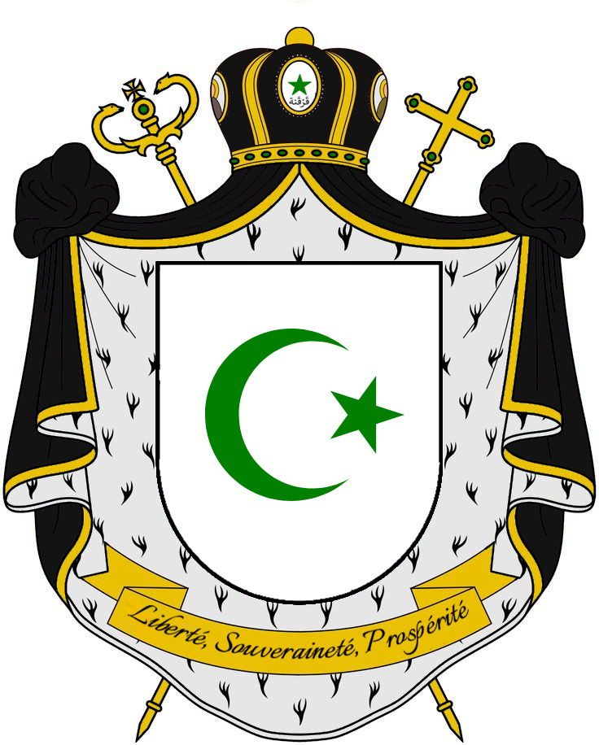
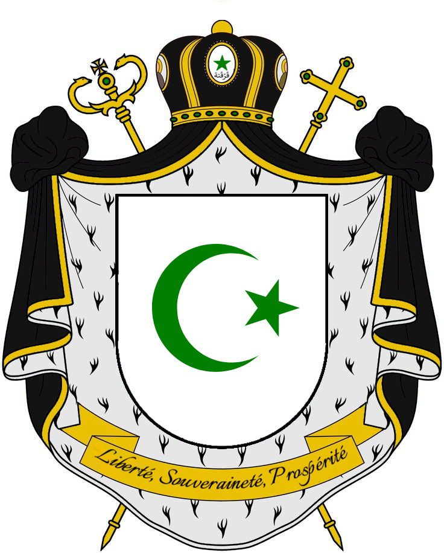

Etymology
محميّة قَرْقَنة البحرية السيادية (Maḥmiyyat Qarqana al-Baḥriyya al-Siyādiyya) translates to Sovereign Maritime Protectorate of Qarqana in English and Protectorat Maritime Souverain de Qarqana in French. It reflects the sovereignty and maritime heritage of the islands.
History
The Qarqana islands have been inhabited since ancient times. Initially settled by the Phoenicians, they established trading posts and utilized the islands' strategic location to dominate maritime trade routes. The Romans later annexed the islands, making them vital hubs for salt production, agriculture, and fishing. Qarqana became renowned for its fertile lands and abundant marine resources, supplying goods to regions across the Mediterranean.
During the Arab expansion in the 7th century, the islands came under Islamic influence, becoming part of the greater Tunisian region. The Arabs introduced advanced agricultural practices, including irrigation, which enhanced the islands' productivity. Qarqana also became a religious center, with mosques and shrines that drew pilgrims from across North Africa.
In the 16th century, the islands were incorporated into the Ottoman Empire. Under Ottoman rule, Qarqana flourished as a maritime hub, with shipbuilding and fishing becoming central industries. The Ottomans fortified the islands, recognizing their strategic importance in controlling Mediterranean trade routes.
By the 19th century, European powers, particularly France and Italy, sought to dominate the region. The Husainid Beys of Tunisia managed to retain nominal control, but European influence grew. This era saw the rise of hybrid Arab-French families, such as the Al-Haddad, Al-Muḥammadī, and Al-Najm, who formed an oligarchic elite controlling the islands' economy and politics.
In 1910, under the leadership of Yusuf al-Haddad, these families established the Sovereign Maritime Protectorate of Qarqana. The Protectorate declared its autonomy, blending local traditions with European administrative practices to maintain control over the islands' resources and governance.
During the World Wars, Qarqana's strategic position made it a contested site, with control shifting between Axis and Allied forces. Despite the turmoil, the oligarchic families leveraged their influence to ensure the islands' economic stability. After World War II, Qarqana aligned with Tunisia's independence movement while maintaining its unique status as a self-governing entity.
In the late 20th century, modernization efforts transformed Qarqana. Infrastructure development, eco-tourism, and maritime law conferences positioned the islands as a model of sustainable development. The oligarchic families, while retaining significant influence, allowed for greater political participation, fostering a sense of unity and progress among the population.
Government and Politics
The Protectorate operates under a unique governance structure:
- Sovereign Authority: Protector of Qarqana, a ceremonial figurehead symbolizing unity.
- Executive Branch: Led by the Chief Executive, responsible for governance and economic policies, supported by departments for maritime affairs, cultural preservation, and more.
- Legislative Branch: The Legislative Council, presided over by its elected President, deliberates and advises on governance.
- Judiciary: High Judiciary of Qarqana, including the Supreme Maritime Court and Constitutional Tribunal.
Economy
The Qarqana economy thrives on fishing, salt production, and eco-tourism. The 20th century saw significant modernization efforts, including luxury tourism and international conferences on sustainability and maritime law. The Qarqanian Rial (ريال قَرْقَنِي) is the official currency, further reflecting the islands' sovereignty.
Historical Architecture of Qarqana
The Qarqana Islands are home to unique architectural styles shaped by centuries of cultural interaction. Ottoman-era forts and watchtowers dominate coastal areas, reflecting the islands' strategic importance in controlling Mediterranean trade routes. Urban areas feature a mix of traditional North African courtyard houses and colonial administrative buildings. Preservation efforts focus on maintaining these structures as part of the islands' heritage.
Energy and Sustainability Initiatives
Qarqana has invested in renewable energy projects to support sustainable development. Solar energy fields and small-scale wind farms provide power to rural communities. Desalination plants ensure a reliable water supply, reducing dependency on external resources. These initiatives align with the islands' commitment to environmental preservation and self-sufficiency.
Linguistic Identity
The Qarqanian dialect is a blend of Arabic and French, reflecting the islands' historical influences. It features unique maritime terminology derived from Phoenician roots, alongside Ottoman and Berber loanwords. Efforts to document and preserve the dialect have been supported by local institutions, ensuring its survival as a key element of Qarqana's cultural identity.
Gambling in Qarqana: A Historical Perspective
The Qarqana Islands, renowned for their rich history and strategic maritime significance, also hold a lesser-known yet intriguing reputation as a hub for gambling and entertainment. This legacy dates back to the early 20th century, during the establishment of the Sovereign Maritime Protectorate of Qarqana in 1910 under the leadership of Yusuf al-Haddad. Inspired by the cosmopolitan culture of the Mediterranean, the oligarchic elite of Qarqana introduced gaming houses and leisure establishments to attract merchants, sailors, and travelers from across the region.
The Golden Age of Gambling
By the mid-20th century, the islands had gained prominence as a gambling destination, rivaling other famed Mediterranean resorts. The blend of Arab, Ottoman, and European influences shaped an environment of luxury and discretion that appealed to the affluent. Exclusive casinos and gaming salons, often hosted in historic villas or purpose-built establishments along the coast, became synonymous with Qarqana's thriving economy.
Modern-Day Gambling: A Quiet Legacy
Although Qarqana's heyday as a gambling hotspot waned in the late 20th century, the islands retain their charm as a more subdued destination for leisure and gaming. Modernization efforts focused on sustainable development and eco-tourism have reshaped Qarqana's identity, but a handful of exclusive casinos and private gaming clubs continue to operate. These establishments, often catering to high-net-worth individuals, emphasize discretion and luxury, blending modern amenities with the islands’ historic allure.
Today, gambling in Qarqana is less ostentatious than in its golden age, reflecting a quieter, more refined atmosphere. Local regulations ensure that the industry aligns with the islands’ cultural and environmental values, while still honoring a tradition that has played a pivotal role in Qarqana's unique history. The gambling industry now operates as part of a diversified economy, contributing to the islands’ status as a model of balanced development in the Mediterranean region.
Notes
- The Qarqanian Rial (ريال قَرْقَنِي) is the official currency.
- The motto of Qarqana is "Freedom, Sovereignty, Prosperity" (حُرّيّة، سيادة، رخاء).
References
- 1. "History of Qarqana," Sovereign Maritime Archives, 2024.
- 2. "Qarqana Governance Structure," Official Reports, 2023.
| Sovereign Maritime Protectorate of Qarqana | |
|---|---|
 

|
|
| Capital | Remla |
| Currency | Qarqanian Rial (ريال قَرْقَنِي) |
| Official Languages | Arabic, French |
| Status | Polity with limited recognition (1910) |
| Demonyms | Qarqanian |
| Area | 160 km2² (62 sq mi) |
| Population | 16,439 (2025 estimate) |
| Driving Side | Right |
| License Plate Prefix | QAR |
| Highest Elevation | 13 metres |
| Government Type | Oligarchic Maritime Protectorate |
| Top 3 Governmental Figures | Protector: Fadil Leclerc Chief Executive: Layla al-Muḥammadī-Dubois Legislative President: Farida al-Najm |